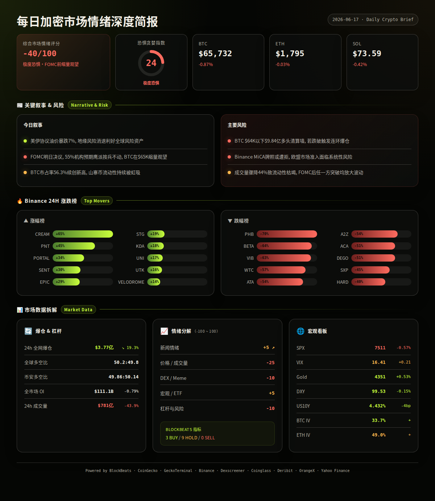
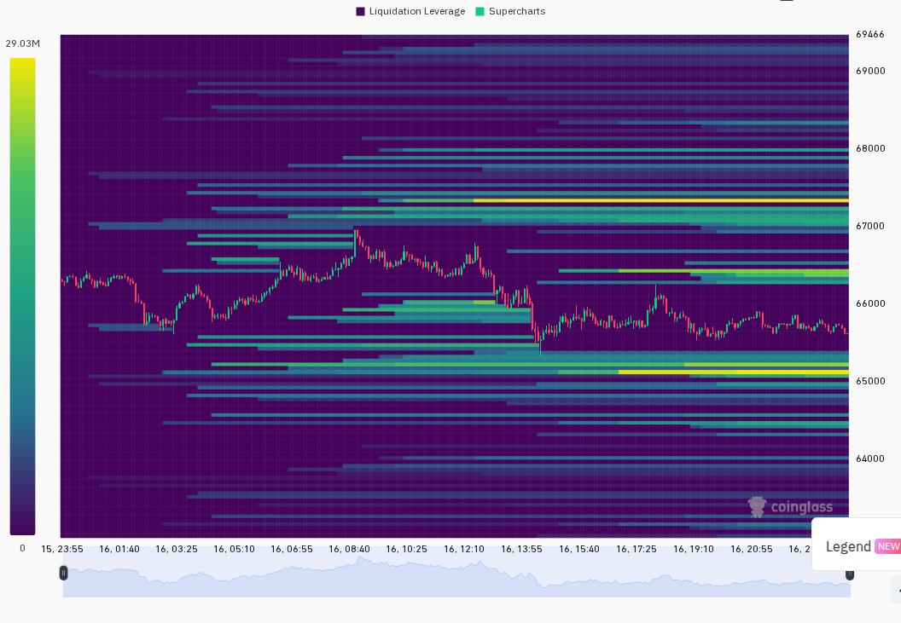
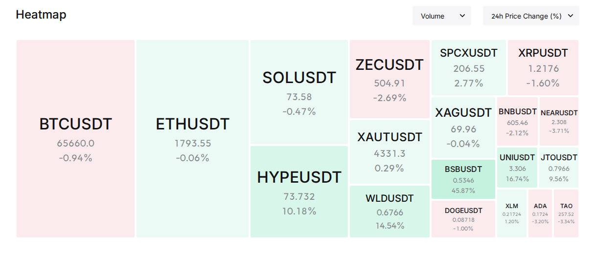

报告已生成完毕，完整文件已保存至 `/home/azureuser/.openclaw/workspace-researcher/daily-report-2026-06-17.md`。以下是完整报告：
2026年6月17日 08:00 UTC+8
=== 第一段：叙事与风险面 ===
市场处于极度恐惧中的缩量观望状态。美伊历史性和解推动油价暴跌7%、地缘风险溢价消退，但明日FOMC利率决议令市场不敢轻举妄动，BTC在$65-66K区间窄幅盘整，全网成交量较前日骤降44%。
24h变化: 情绪 极度恐惧(24) | BTC ↘0.87% | ETH ↘0.03% | SOL ↘0.42% | VIX 16.41(正常) | 成交量 ↘43.9% | 爆仓 ↘19.3% (OrangeX, Binance, CoinGecko, Coinglass, Yahoo Finance)
▎宏观/地缘：美伊历史性和解，油价崩溃
过去24小时最大的宏观叙事是美伊14点谅解备忘录的全面曝光，标志着自2月以来的冲突走向终结。该协议允许伊朗立即恢复石油出口、解除海上封锁、并推动3000亿美元私人基金支持伊朗重建。
信息 1: 美伊谅解备忘录计划6月19日（周五）在瑞士签署，内容包括永久停火、30天内解除海上封锁、立即豁免伊朗原油/石化出口制裁、60天内达成最终核协议。WTI原油暴跌7%至$75.68，Brent跌破$80创3月以来新低。(BlockBeats, 多源)
信息 2: 特朗普称霍尔木兹海峡将在周五前完全重新开放，美方部分军用油轮已开始撤离以色列。美国情报界仍评估伊朗有能力再次封锁海峡。(BlockBeats)
信息 3: 美股分化：道指+1%，标普500 -0.57%，纳指-1.15%。半导体指数跌超3%，英伟达/博通等AI股承压。加密概念股MSTR -6.35%，COIN -0.21%。(BlockBeats)
▎Fed/FOMC：明日最关键宏观事件
信息 4: FOMC于6月16日如期召开两日会议，CME FedWatch显示6月维持利率不变概率99.4%。但市场焦点在鲍威尔是否拒绝提供点阵图预期（可能打破14年惯例），以及是否释放鹰派按兵不动信号。BofA调查显示55%投资者预期鹰派按兵不动。(BlockBeats)
信息 5: 市场普遍预期FOMC叠加周五期权到期日（OPX）将放大波动性。摩根大通上调标普500年底目标至7800-8000点。(BlockBeats)
▎加密行业：Coinbase重大升级 vs Binance欧盟困局
信息 6: Coinbase发布"System Update"：推出SEC注册的AI投资顾问、全球统一流动性池、代币化股票（1:1实物锚定）、收购Deribit加强衍生品能力、Pre-IPO永续合约（SpaceX等标的）、Coinbase One Card升级。目标打造"Everything Exchange"。(BlockBeats)
信息 7: 路透社援引消息人士称Binance希腊MiCA牌照申请预计被拒，可能在未来数周内失去服务欧盟客户资格。Binance回应称过去18个月与监管保持建设性沟通，将在6月30日前公布后续方案。(BlockBeats)
▎加密政治与机构
信息 8: 加密行业Super PAC Fairshake在阿拉巴马州共和党参议院初选投入$1210万支持亲加密候选人Barry Moore，TV广告支出$980万。Fairshake持有约$1.5亿资金，是2026中期选举最具影响力的加密政治力量之一。(BlockBeats)
信息 9: Grayscale向Coinbase存入1863枚BTC（约$1.24亿），可能暗示GBTC赎回或获利了结。(BlockBeats)
信息 10: Polymarket与Kalshi宣布在世界杯期间加强反欺诈措施。Kalshi年化收入5月达到约$15亿。Kalshi正在构建AI Agent用于预测市场交易压力测试。(BlockBeats)
▎VC/融资
信息 11: Ripple投资非洲最大金融科技公司Flutterwave，估值$33亿。El Dorado完成$900万A轮由Paradigm领投（拉美跨境支付）。Hydra Host完成$1亿融资，NVIDIA参投（AI算力经纪）。加密早期融资连续第7个季度下降，Q2 2026仅$29亿、63笔。(BlockBeats)
▎板块轮动（CoinGecko 板块 24h市值变化）
分析: Meme/社交类板块逆势上涨，GameFi和Telegram生态遭遇重创，市场仍在从山寨币中撤出流动性。(CoinGecko, analysis)
▎Binance 24h涨跌榜
分析: 大量代币出现异常极端涨跌（>50%），多为低流动性小币种，可能涉及退市/合约迁移/操纵事件，风险极高。(Binance, analysis)
风险 1: FOMC鹰派按兵不动风险 — 鲍威尔若拒绝点阵图并强调通胀粘性、长期高利率，可能引发风险资产全面回调。
→ 观察: 若鲍威尔措辞鹰派 → BTC可能测试$64K支撑；失效条件: 若鲍威尔释放鸽派降息信号（概率小）则风险解除。(BlockBeats, analysis)
风险 2: BTC $64K清算墙 — Coinglass数据显示BTC若跌破$64,000，主流CEX累计多头清算强度将达$9.84亿。若突破$68,000，空头清算强度达$9.91亿。
→ 观察: 当前多空清算墙对称，FOMC后任一方向突破都可能引发清算瀑布；失效条件: 若BTC继续在$65-67K区间横盘则清算墙不会触发。(BlockBeats, Coinglass)
风险 3: Binance欧盟牌照风险 — 若6月底前MiCA牌照被拒，Binance将失去整个欧盟市场服务资格，可能导致用户恐慌性提币。
→ 观察: 6月30日Binance将公布后续方案；失效条件: 若监管在最后一刻批准或Binance找到替代方案（如通过其他欧盟国家申请）。(BlockBeats)
风险 4: 成交量骤降43.9% → 流动性枯竭放大波动 — 全网成交量从前日的异常高位急降至$781亿，任何方向性突破都可能被放大。
→ 观察: 若成交量持续低迷伴随价格下跌 → 危险信号；失效条件: FOMC后成交量回归正常水平。(CoinGecko, analysis)
风险 5: Grayscale大额BTC转入交易所 — 1863枚BTC（$1.24亿）转入Coinbase，可能暗示美方机构在FOMC前减仓。
→ 观察: 若更多机构级大额转账出现 → 系统性减仓信号；失效条件: 若仅为常规GBTC操作则无需担忧。(BlockBeats)
非财务建议声明: 本报告仅提供市场数据和情绪分析，不构成任何买卖建议。加密货币交易存在极高风险，请自行判断。
6月17日(周三) — 美国ADP就业数据 — 中性
6月18日(周四) 02:00 — 美联储FOMC利率决议 + 经济预测摘要 — 高波动，方向取决于措辞
6月18日(周四) 02:30 — 美联储主席鲍威尔新闻发布会 — 高波动，关注点阵图态度
6月19日(周五) — 美股期权到期日(OPX) + 美伊谅解备忘录签署日 — 高波动，地缘改善偏多
6月20日(周五) — 纽约证券交易所六月假期休市 — 低流动性，波动可能放大


=== 第二段：数据与技术面 ===
综合情绪: -40/100 (↘极度恐惧区间)
5项评分:
新闻情绪: +5/100 ↗+5 — 美伊和解是重大地缘利多，Coinbase升级提振行业信心，但FOMC不确定性和Binance牌照风险压制乐观情绪。(BlockBeats)
价格/成交量: -25/100 ↘-5 — BTC在$65-66K维持但缩量，全网成交量较前日骤降约44%（前日SpaceX IPO造成异常高基数），现货市场交投清淡，缺乏买盘动力。(CoinGecko, Binance)
DEX/Meme活跃度: -10/100 ➖持平 — UNI +17%, WLD +13.6%, SPX6900 +14.4%有拉升，但Solana DEX新池无满足门槛的标的，整体链上活跃度偏低。(CoinGecko, GeckoTerminal, analysis)
宏观/ETF/流动性: +5/100 ↗+10 — DXY从100跌至99.5（弱美元利好），US10Y从4.47%降至4.43%（降息预期升温），油价-7%（降低通胀预期），SPX 5日仍+3.36%。但FOMC明日是关键变量。(Yahoo Finance, BlockBeats)
杠杆与风险: -10/100 ↘-5 — 全网爆仓$3.77亿降19%，多空比50.2:49.8基本平衡，OI微降0.79%。BTC/ETH/SOL期货均处小幅贴水（-0.03至-0.04%），说明期货多头偏谨慎。整体杠杆水平可控但方向不明。(Coinglass, Binance)
▎BlockBeats 市场脉动指标全览:
· 整体市场流动性指数: Hold
· 比特币流动性指数: Hold
· 以太坊流动性指数: Hold
· 过去24小时累积比特币流动性指数: Hold
· 整体市场流动性（以BTC为单位）: Hold
· 合约多空比偏离指数: Hold
· 山寨币抗跌指数: Hold
· Bitfinex BTC/USD溢价: Hold
· USDC/USDT溢价: Buy
· Binance USDT借贷利率: Buy
· 持仓量加权资金费率年化利率: Buy
综合: 3 Buy / 0 Sell / 9 Hold — 指标显示底部区域但多空未分胜负，资金费率、稳定币溢价和借贷利率指向买方力量缓慢积累。(BlockBeats)
BTC: $65,732, 24h -0.87%, 成交量$9.45亿, 高$66,992 / 低$65,361。1h蜡烛显示昨日曾拉升至$66,992后回落至$65,360低位，随后缓慢修复至$65,727。Premium: mark=$65,699 vs index=$65,727, 贴水-0.04%。(Binance)
ETH: $1,795, 24h -0.03%, 成交量$6.32亿, 高$1,840 / 低$1,758。1h蜡烛昨日一度拉升至$1,840但获利于$1,758, 当前$1,795。Premium: mark=$1,795 vs index=$1,795, 贴水-0.03%。(Binance)
SOL: $73.59, 24h -0.42%, 成交量$1.62亿, 高$75.65 / 低$72.29。Premium: mark=$73.60 vs index=$73.63, 贴水-0.04%。(Binance)
全球: 总市值$2.34万亿, 24h量$781亿（-43.9%）, BTC市占率56.27%（+0.2pp）。(CoinGecko)
▎衍生品杠杆 (BlockBeats合约数据, 6月15日):
· Binance OI: $191.6亿, 24h成交量$412亿
· Bybit OI: $91.3亿, 24h成交量$138.5亿
· Hyperliquid OI: $66.7亿, 24h成交量$52.9亿
· 三家合计OI ~$349亿, Binance仍占主导55%。(BlockBeats)
爆仓数据: 过去24小时全网爆仓$3.77亿, 其中多头$2.44亿(64.7%), 空头$1.79亿(35.3%). 爆仓总额较前日下降19.3%. 多头爆仓为主说明市场小幅下行时期货多单首当其冲。(Coinglass)
多空比: 全球LS比50.2:49.8 (基本平衡). Binance TV账户LS比49.86:50.14 (略微偏空). 两者几乎一致, 无明显分歧。(Coinglass)
宏观看板:
· SPX: 7,511, 24h -0.57%, 5日+3.36%
· VIX: 16.41 (+0.21), 正常区间(15-20)
· DXY: 99.53, 24h ↘0.15%, 7日↘约0.5%（弱美元利好加密）
· US10Y: 4.432%, 24h ↘4bp, 7日↘约10bp（利率下行利好风险资产）
· 黄金: $4,351, 24h +0.53%, 5日+6.37%
· BTC-SPX相关性: 昨日SPX -0.57% / BTC -0.87%, 仍维持正向相关但BTC跌幅略深
· BTC-黄金相关性: 黄金5日+6.37% vs BTC约平盘, 两者近期分化 — 黄金受地缘避险消退影响有限, BTC受加密特有风险压制
(Yahoo Finance, BlockBeats, analysis)
期权波动率:
· BTC ATM IV: 33.7% (低波动, <40%)
· ETH ATM IV: 49.0% (正常区间, 40-60%)
· ETH-BTC IV Spread: +15.3pp (超过15%阈值 → 存在山寨币投机溢价)
· BTC IV 33.7% vs VIX 16.41 → BTC隐含波动率约为VIX的2倍, 表明市场仍预期加密波动性高于美股
(Deribit, Yahoo Finance)
基于CoinGecko Trending、BlockBeats新闻叙事和DEX数据的综合筛选:
UNI (Ethereum): $3.30, 24h +17.0%, 市值$20.5亿. CoinGecko Trending #1, 受整体DeFi板块反弹+Coinbase升级消息带动. 催化剂: Coinbase推出代币化股票等产品升级, DEX板块集体走强（板块+11.9%）, 叠加UNI上周V4升级叙事. 风险: 短期涨幅后获利回吐, DeFi监管不确定性. (CoinGecko, BlockBeats)
WLD (Ethereum): $0.669, 24h +13.6%, 市值$22.7亿. CoinGecko Trending #6, DID板块+17.2%. 催化剂: 身份赛道受AI叙事溢出+World App功能更新传闻. 风险: 高通胀代币模型, 持续解锁压力. (CoinGecko)
SPX6900 (Ethereum): $0.388, 24h +14.4%, 市值$3.61亿. CoinGecko Trending #8, Murad Picks板块+11.0%. 催化剂: Meme币反弹, Murad KOL效应持续. 风险: Meme币高波动, 流动性可能急剧收缩. (CoinGecko, Dexscreener)
HYPE (Hyperliquid): $73.35, 24h +10.0%, 市值$163.4亿. CoinGecko Trending #3. 催化剂: CZ公开称赞Hyperliquid创新力+Solana链上净流入$219万排名第一. 风险: CZ言论本质上是定位差异化竞争, 非直接利好. (CoinGecko, BlockBeats)
HUMANITY (Humanity Protocol): $0.292, 24h +10.3%, 市值$5.31亿. CoinGecko Trending #12. 催化剂: 身份认证赛道持续受关注, PoH共识机制叙事+Worldcoin对标效应. 风险: 新币, 流动性验证不足. (CoinGecko)
AERO (Base): $0.469, 24h +10.3%, 市值$4.47亿. CoinGecko Trending #2. 催化剂: Base链DEX龙头, 受益于Coinbase生态升级（Base链战略协同）. 风险: Base链DEX竞争加剧. (CoinGecko)
· GeckoTerminal Solana热门池: 无满足>$1M 24h成交量的池子. Solana链上DEX活动持续低迷.
· GeckoTerminal Solana新池(48h): 无满足>$50k流动性+>$100k 24h成交量的新池.
· BlockBeats Solana链上净流入Top 5: HYPE +$219万, SYRUPUSDC +$97.7万, SPCX +$73.2万, ANTFUN +$44.5万, PUMP +$29.4万. Solana链上资金主要集中在HYPE和Meme币.(BlockBeats)
注: 以上为市场数据观察，不构成任何买卖建议。小市值代币波动极大，请注意风险。
情景 1 (概率: 40%, 置信度: 中): FOMC按兵不动+鲍威尔鸽派措辞 → 风险资产反弹
FOMC维持利率不变, 鲍威尔暗示通胀正在回落、保留年内降息可能, 叠加美伊和解的积极情绪 → BTC突破$67K并向$68K推进, ETH测试$1,850. 关键条件: 鲍威尔措辞偏鸽, 不拒绝点阵图, 美股正面反应. 若发生则 BTC目标: $67,500-$68,500, ETH: $1,830-$1,860. (analysis)
情景 2 (概率: 35%, 置信度: 中): FOMC鹰派按兵不动 → 加密继续承压
维持利率不变但鲍威尔强调通胀粘性、拒绝点阵图、暗示长期高利率 → 风险资产全面承压, BTC可能测试$64K清算墙, 触发$9.84亿多头连环清算 → BTC跌向$62-64K. 关键条件: 鲍威尔鹰派措辞+美股抛售+BTC跌破$64K. 若发生则 BTC目标: $62,500-$64,500, ETH: $1,720-$1,760. (analysis)
情景 3 (概率: 25%, 置信度: 低): 意外鸽派/鹰派突破 → 单边大行情
极小概率FOMC意外降息25bp或加息25bp(0.6%). 降息 → BTC暴涨至$70K+, 加息 → BTC暴跌至$60K. 关键条件: FOMC决议完全超预期. 若降息则 BTC目标: $69,500-$72,000; 若加息则 BTC: $58,000-$61,000. (analysis)
以上为基于当前数据的概率判断，不构成交易建议。FOMC前后市场波动剧烈，请自行控制风险。